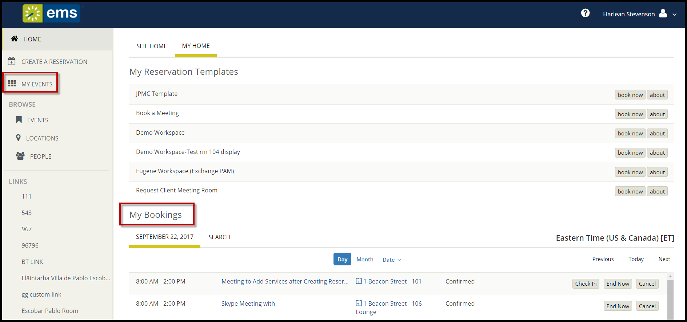

Edit Reservations and Bookings
This section guides you in working with bookings in the Reservation Details page on EMS Web App, where you can view, add, change, or cancel services and attendees for a booking. For an overview, see Add Reservation Details. A reservation may contain multiple bookings, so the procedures below guide you in applying your changes to more than one booking within a reservation.
The process for editing reservations and bookings for Exchange-enabled templates and non-Exchange-enabled templates are different. This topic includes the following information:
Edit Reservations
Concept: Reservations and Bookings: What Is the Difference?
A Reservation is the purpose of the event. In EMS, a reservation is the who (the meeting organizer) and the what of an event. A Reservation contains one or more Bookings. For example, you (the who) can reserve some space for a staff meeting (the what).
A Booking is the where and the when of an event. For example, you can schedule the large auditorium (the where) for a staff meeting on the second Monday in January (the when). There are one or more Bookings in a Reservation.
To edit a reservation:
- To navigate to the reservation you wish to edit, click My Events on the side bar of the Home page.
Use the My Events Link to Find Your Reservations

- Click on the reservation name you wish to edit.
- To edit reservation details, navigate to Reservation Details > Reservation Details tab.
- Click the Edit Reservation Details link.
Edit Reservation Details Page

- Edit any available field.
- Click the Save Reservation Details buttons at either the bottom or top right hand of the page.
Tip: When you click to edit a Reservation or Booking, the page that opens depends upon the type of booking that you are editing—a booking for reserving a room, a booking for requesting a room, or a booking for services only.
Note: If there is Additional Information (e.g., user-defined fields) associated with your reservation, you can edit this information by navigating to the Additional Information Tab from the Reservation Details page. Click the Edit Additional Information button.
Edit Booking (Exchange-enabled Template)
Important: Users are unable to edit the date and time from the Room Request screen. The date and time can be edited from the Manage Bookings screen.
- From the Home page, navigate to the My Events page.
- Click on the Reservation Name for the reservation you wish to edit.
- Click Edit icon next to the booking you wish to edit. The Manage Bookings page appears.
- From the Manage Bookings page, you can:
- Edit/replace the room:
- Click on the Edit icon next to the room to change the location. The user is routed to the Room Request screen.
- Click Search to display the list of available rooms.
Note: In the example below, Demo Room 03 does not have an Add (+) button because it was the original room for this booking.
Room Request Screen

- To choose a room, click the Add (+) button.
- Click Update Booking to save that location to your booking.
- When the Manage Bookings screen appears, click Update Bookings again on this page.
- You will receive a prompt to Notify Attendees. Click either Notify Change (this will send a calendar update to added or removed attendees), Notify All (this will send a calendar update to ALL attendees), or Cancel.
- Changes are applied, attendees are notified, and the calendars of both attendees and the organizer are updated.
- Edit the time/date of the booking:
- Click on the reservation Name for the reservation you wish to edit.
- Click Edit icon next to the booking you wish to edit. The Manage Bookings page appears.
- Edit the Date & Time of the booking in the left-hand column.
- If the room is available for this new time, click Update Bookings.
- If the room is not available for the new time, either select a new time or edit the room for the booking (see above).
- Add an additional location to the same booking:
- Click on the reservation name for the reservation you wish to edit.
- Click Edit icon next to the booking you wish to edit. The Manage Bookings page appears.
- Click Add Location. The Room Request screen appears.
Add Additional Location

Note: All locations within the same booking will have the same Start and End time.
- Click Search to display the list of available rooms.
- Select a room(s) using the Add (+) button.
- Click Done. The Manage Bookings page appears.
- Click Update Bookings.
- A prompt will appear to Notify Attendees. Click either Notify Change (this will send a calendar update to added or removed attendees), Notify All (this will send a calendar update to ALL attendees), or Cancel.
- Changes are applied, attendees are notified, and the calendars of both attendees and the organizer are updated.
- Modify attendees in this booking:
- Click on the reservation Name for the reservation you wish to edit.
- Click the Edit icon next to the booking you wish to edit. The Manage Bookings page appears.
- Navigate to the Attendee section.
- Type in the attendee name in the text field. The system will create a dropdown list of names that match the search.
- Select a name. This attendee will be added to your booking.
- Click Update Subject/Message and Notify Attendees.
- Click either Notify Change (this will send a calendar update to added or removed attendees), Notify All (this will send a calendar update to ALL attendees), or Cancel.
- Changes are applied, attendees are notified, and the calendars of both attendees and the organizer are updated.
Edit Bookings (Non-Exchange-enabled Template)
From the Reservation Details page in the Bookings area, you can edit one booking or multiple bookings.
To edit the date and time on a single or on multiple bookings
- Click the Booking Tools link under the Reservation Tasks section on the right hand side of this page. You can also edit the date and time on multiple bookings by clicking on the Booking Tools link under the Bookings section.
Use the Reservation Tasks and Bookings Sections to Edit Multiple Bookings

- Make any necessary edits.
- Click Update Bookings.
To edit the location and/or date and time on a single booking
- To navigate to the reservation you wish to edit, click My Events on the side bar of the Home page.
- Click on the reservation name you wish to edit.
- Under the Bookings section, click the Edit icon next to the booking. These options are available if you have permissions.
Editing a Booking in the Bookings Section of My Events

- The Room Request window appears, where you can make changes to the booking.
- If needed, you can edit the date and time of the booking under the Date & Time section.
- Search for a new location under the Locations section in the left-hand column.
- Click the Add/Remove link to select by Buildings or Views. Choose a Building or View. Click Update Locations.
- In the Locations section, click Search.
Note: Under the Let Me Search for a Room section in the left-hand column, you can select filters to apply to your search (e.g., Floors, Room Types, etc.).
- Click the Add (+) icon to change the room in your booking.
- Click Update Booking to save the changed location.